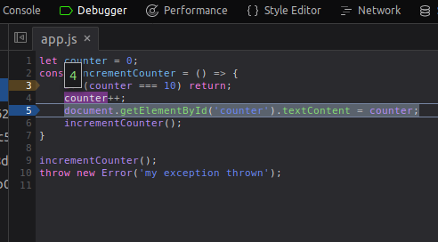
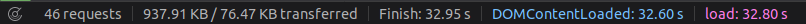
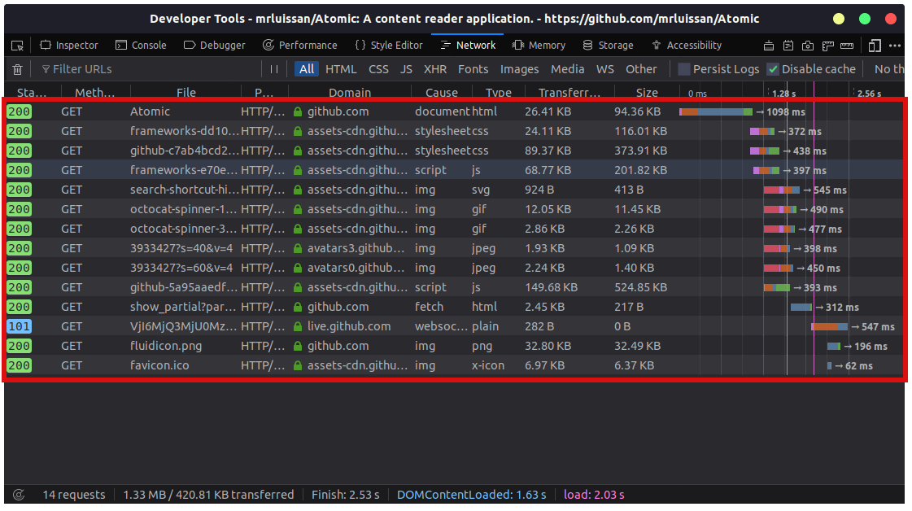
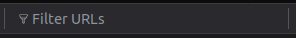
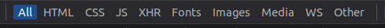
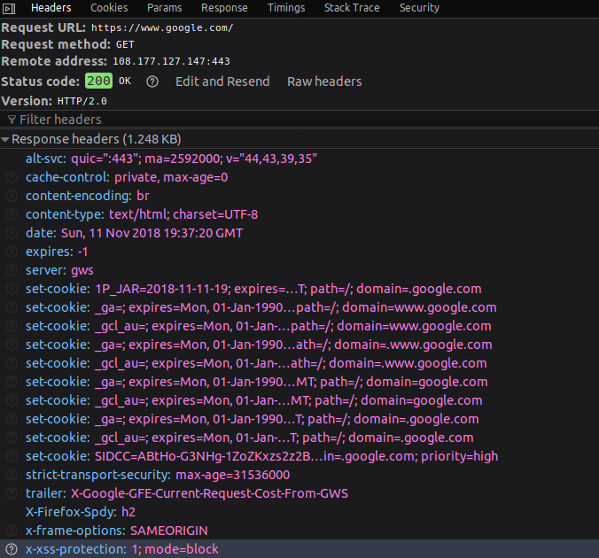

The javascript debugger
The javascript debugger allows you to step through javascript code to see how it behaves step by step. You
can set breakpoints to stop the execution in that line. Also, you can add conditional breakpoints, that is
that if a condition is true then the debugger will stop the execution right there. Furthermore, you can
step into functions when you are debugging, this is the expected behaviour but sometimes you want to step
over a function because you know it doesn't contain bugs.
In this video you can see the full feature set of this tool:
In the video before it's explained how to:
- Set a breakpoint
- Set a conditional breakpoint
- Step over and into the code
- Stop on exceptions
However, this is not all, the debugger provides information at any state of the execution, this means that
when we are stepping through the code we can place the cursor over variables to see their current value.
For example, in the script shown in the video we can check the value of the counter variable
hovering it in the code, in this case it will be equals to 4 because we were in the fourth call.

If we had placed the cursor over the
document object we've had seen all of its properties.
The network monitor
The network monitor is one of the most important tools regarding optimization. We can see all the documents,
assets, stylesheets, scripts, fonts, service workers, etc... That are being loaded. It shows their current
state, for example if an image is being downloaded.
Furthermore, it shows the best information about a page: its size and time to load.

You can examine all of the assets that have been loaded or are being downloaded in its main panel, it will
look like this:

Here, you can get precios information about the assets loaded. The request status, the method used to get
the asset, the name of the file, the domain of the file, the type of file (img, script, etc); the cause
such as websockets, worker, document, etc; the data transferred and the real size and the graphical cascade
with stages of files being showed (parsed, executed and so). All in all, this is one of the best features
in developer tools because it allows you to debug assets requests and optimize the load of your web page.
Filtering
Some pages will load up to 50 assets or more, and scrolling through them to find the one we are looking for
it's a time consuming task. The network monitor offers a solution for this, which is at the top left side
and it looks like this:

However, if you feel like no typing, you can use the options at side which let you filter by document type,
for example: HTML, CSS, Images, Ajax, etc...

Asset details
We've gotten information about the file we want, but we need to know the cookies that are attached to that
request, how can we know that?
Well, when we have found our asset we need to click on it and a panel will open on the right side of the
main panel. It will show more information about that request, for example we can navigate through the tabs
in that panel, these are: Headers, Cookies, Params, Response, Timings, Stack Trace, and Security.

Headers
As you can see in the header tab, there is information about the response headers, for example if we want
to see the Content-Encoding it will be reflected there. These are the headers attached in the
response.
It is included in this panel:
- Request url
- Request method
- Remote ip address and port
- Status code
- The http request and headers sent
- A button to edit and resend the request
- And a raw headers button which will display the raw request and response headers (not formatted)
Popuplar headers are:
| Name |
Description |
| cache-control |
This header will inform the browser for how long can this asset be cached until refreshed. |
| Content-Encoding |
This will inform the browser which compression algorithm was used to compress the fiel
sent. |
| content-type |
This informs the browser with the asset mime type and the browser will use this information
to cateogrize the request and parse it correctly. |
There are much more headers that can be seen here: List
of HTTP header fields - wikipedia
Also, you can examine the headers attached to your request, there it you can see for example your user
agent which will inform the page you are accessing of the browser that you are using.
Cookies
As in the headers, we get two panels: the request cookies and response. This is pretty straightforward, we
get information about the cookies you send to the server requested, and you'll see the cookies sent back
from the server.
Params
This one is pretty useful if you work with forms, you could see here the parameters sent through a form and
they'll be displayed nicely there.
Response
In this section you can see the response sent back from the server, if it is an html page, you can see the
html code and a little preview, this would work with other files such as images, scripts and more...
Timings
It will show a little graph with information about the trace of an asset through the network phases, for
example to retrieve an image from the server there will be these steps:
| Name |
Description |
| Blocked |
Time spent in a queue waiting for a network connection.
The browser imposes a limit on the number of simultaneous connections that can be made to a
single server. In Firefox
this defaults to 6, but can be changed using the
network.http.max-persistent-connections-per-server preference. If all
connections are in use, the browser can't download more resources until a connection is
released. |
| Dns Resolution |
Time taken to resolve a host name. |
| Connecting |
Time taken to create a TCP connection. |
| Sending |
Time taken to send the HTTP request to the server. |
| Waiting |
Waiting for a response from the server. |
| Receiving |
Time taken to read the entire response from the server (or cache). |
Security
If the site runs https this will appear on the options and it will show detauls about the connection such as
the protocol, the cipher and certificate details.
Stack trace
An stack trace will be shown with information of where the request was initially made.